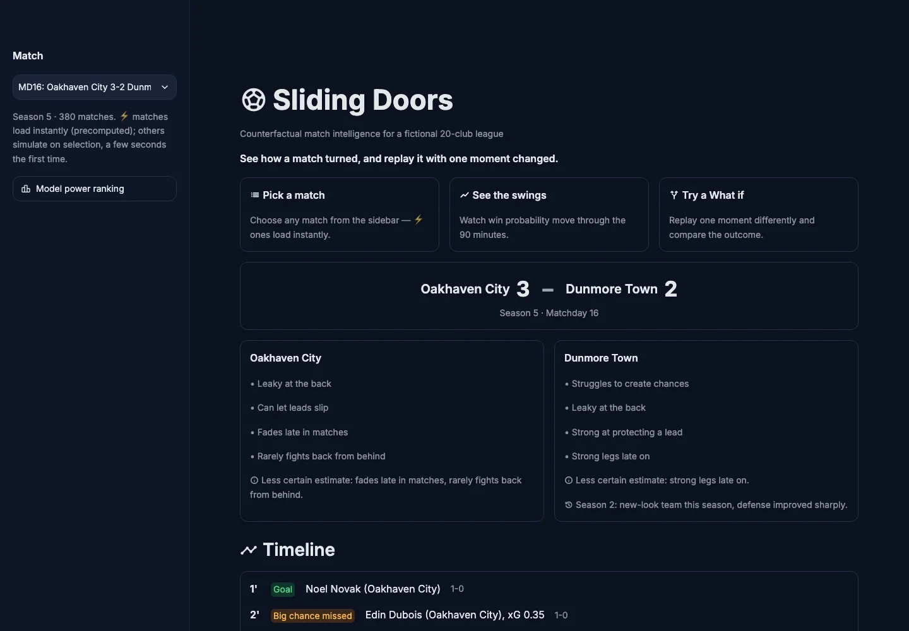
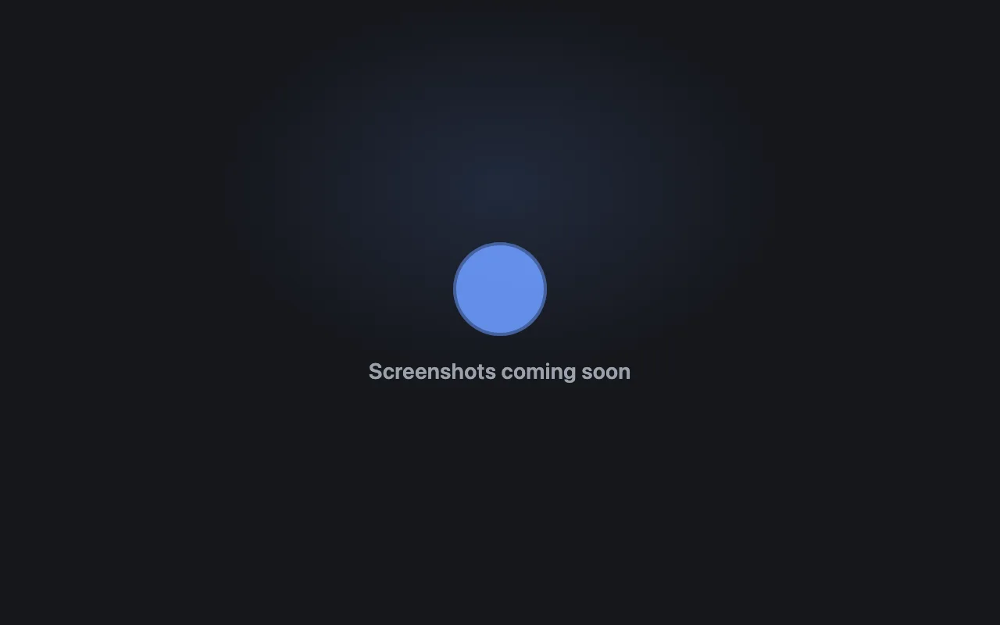

Portfolio
Aviad Merlin
I've run operations. Now I build the systems that make them measurable.
Open to Data Analyst, Data Operations and PMO student roles.
Selected work
Three systems, told through the process and data behind them, not just the code.

Sparkio
Event vendors run on Excel, WhatsApp and sticky notes. I mapped the whole pipeline, leads to quotes to events, and built one system for it.

Sliding Doors
A hackathon entry that re-simulates a football match hundreds of times to measure what one moment, a goal, a red card, was actually worth.

TennisVoiceScore
Keeping score mid-match means stopping to tap a phone. I built a hands-free, voice-controlled scorer instead.
About
I'm a 3rd-year Industrial Engineering & Management student at Ruppin Academic Center. Before any of this I ran Sorbo Cocktails, a mobile cocktail bar for events.
That business is where most of my project ideas actually come from. I know what it feels like to track a lead in a WhatsApp thread and chase a quote by phone, because I did it myself. That's the angle behind Sparkio, and behind how I look at any process: as something you can map, simplify and measure.
I'm not applying as a developer. I use code, often with Claude Code, as a tool to model how an operation actually runs and make its data visible to the people running it.
Education & Experience
B.A. Industrial Engineering & Management
Ruppin Academic Center · 3rd year
Sorbo Cocktails
Ran a mobile cocktail bar for events end to end: leads, quotes, logistics and service on the day.
Toolkit
Contact
Open to Data Analyst, Data Operations and PMO student roles.